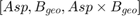
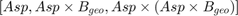
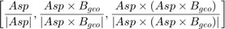

Método TRIAD adaptado
syms a_x a_y a_z gm_x gm_y gm_z g Asp_b = [a_x ; a_y ; a_z]; geomag_b = [gm_x; gm_y; gm_z];
syms geomag_NED_x geomag_NED_y geomag_NED_z Asp_NED = [0;0;-g]; geomag_NED = [geomag_NED_x; geomag_NED_y; geomag_NED_z];
Base 1:

A = [Asp_NED, geomag_NED, cross(Asp_NED,geomag_NED)]; B = [Asp_b, geomag_b, cross(Asp_b,geomag_b)]; D_NED_B_1 = B*inv(A);
Base 2:

A = [Asp_NED, cross(Asp_NED,geomag_NED), cross(Asp_NED,cross(Asp_NED,geomag_NED))]; B = [Asp_b, cross(Asp_b,geomag_b), cross(Asp_b,cross(Asp_b,geomag_b))]; D_NED_B_2 = B*inv(A);
Base 3:

A = [... Asp_NED/norm(Asp_NED), ... cross(Asp_NED,geomag_NED)/norm(cross(Asp_NED,geomag_NED)), ... cross(Asp_NED,cross(Asp_NED,geomag_NED))/norm(cross(Asp_NED,cross(Asp_NED,geomag_NED)))... ]; B = [... Asp_b/norm(Asp_b), ... cross(Asp_b,geomag_b)/norm(cross(Asp_b,geomag_b)), ... cross(Asp_b,cross(Asp_b,geomag_b))/norm(cross(Asp_b,cross(Asp_b,geomag_b)))... ]; D_NED_B_3 = B*inv(A);